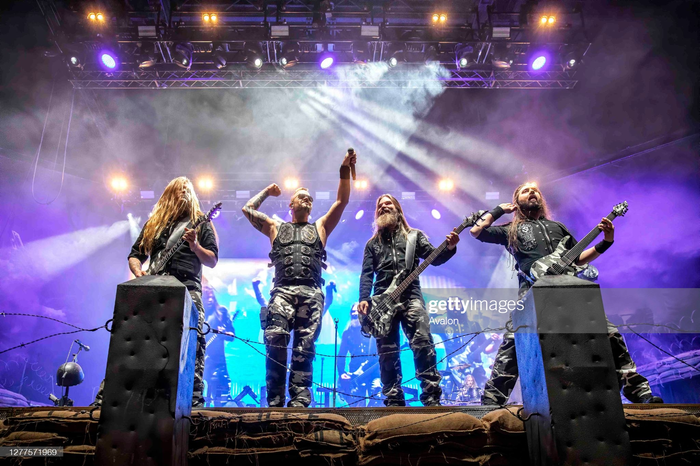

Sabaton

Powerwolf

Power metal as a genre came about through the sci-fi, medieval, and fantasy-oriented lyrics of Ronnie James Dio. The high-pitched singing as well as double guitars of Judas Priest were also the foundations of this heavy metal sub-genre. Iron Maiden's epic melodies would also add to the melting pot as well as Deep Purple's use of keyboards. Manowar would be the band that many would look to as to what to look like, with their thematic outfits.